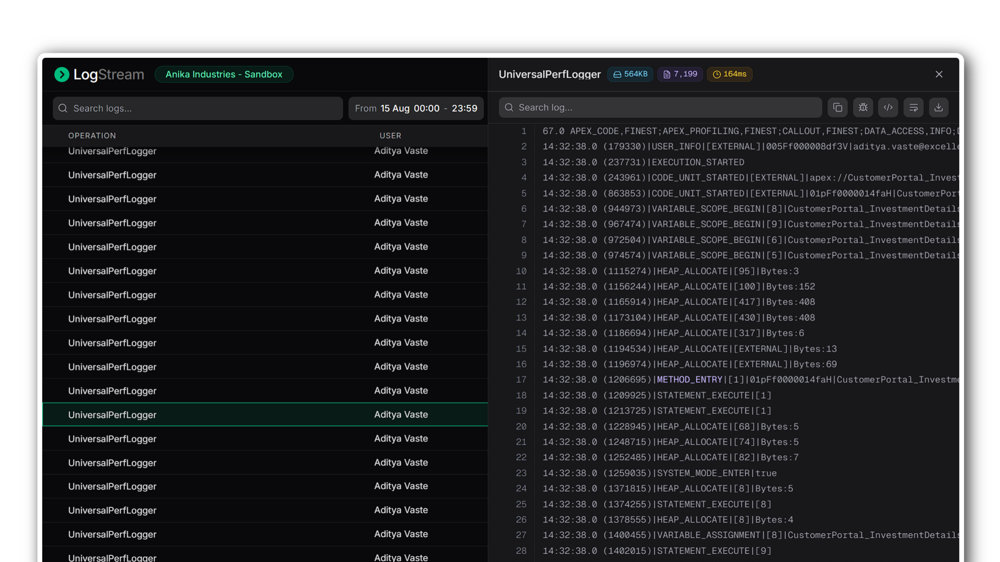
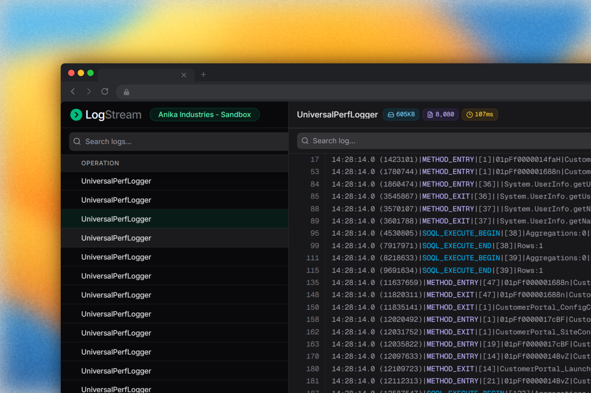
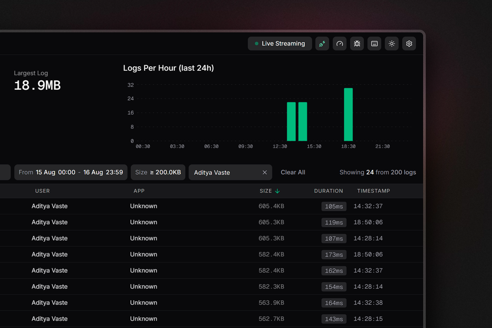
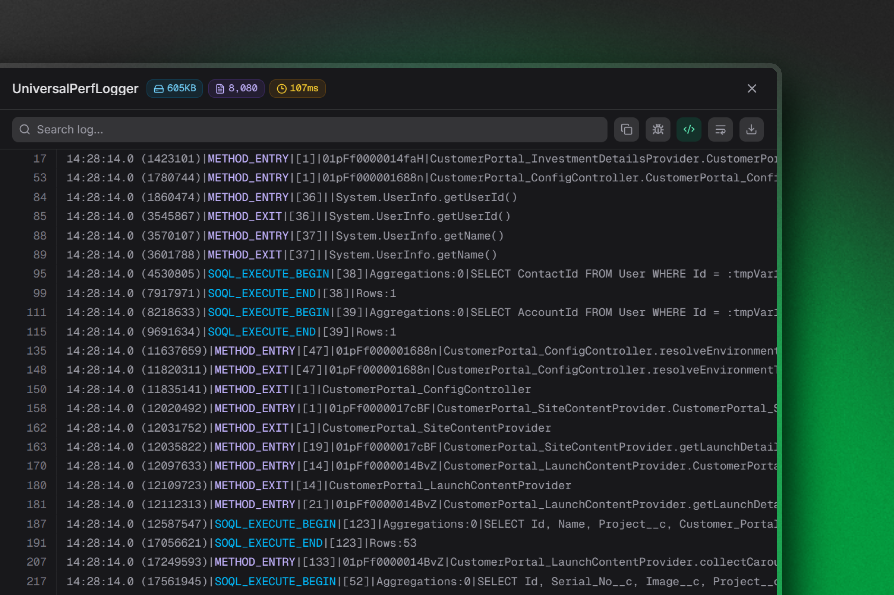

Debug Apex without opening Setup
live, lean and local
LogStream pulls Salesforce debug logs into your browser as they're written — filtered, searchable, and readable without ever opening Setup.

LogStream streams01 every log your org writes, filters02 down to the one that matters, and opens03 it in full — without leaving the tab you're already in.
Logs arrive as they're written
A live connection to your org means new logs land in the list the moment Apex runs. Volume by hour, average duration, and slow requests update alongside them, so a spike is visible before anyone reports it.

Narrow hundreds down to one
Filter by user, time range, or log size — or click a bar on the chart to jump straight to that hour. Trace flags can be set and cleared for any user right from the toolbar, no Setup detour.

A log body you can actually read
Open any log in a resizable panel with line wrapping, search, and virtualised scrolling that stays smooth at tens of thousands of lines. Read state is remembered, so you always know what you've already been through.

Everything else
Built inAutomatic org detection
Picks up your active Salesforce session on load — no keys, no OAuth dance.
API budget awareness
Daily request usage is visible before you run out, not after.
Read & unread state
Persisted locally, so a reload never loses your place.
Keyboard driven
Arrow through logs, sort by column, and open bodies without touching the mouse.
Configurable polling
Set poll interval, idle timeout, trace flag duration, and slow-log threshold.
Local only
Logs are cached in your browser. Nothing is sent to a third-party server.
Debug Apex without opening Setup
Built by Aditya Vaste for Salesforce Devs